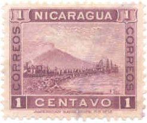
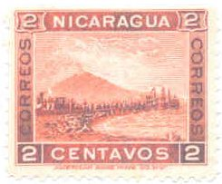
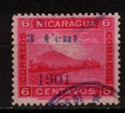
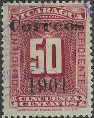
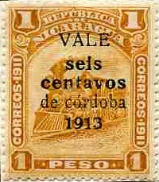

Return To Catalogue - Nicaragua 1862-1899 - Fiscal stamps and fiscal stamps used for postal purposes - Nicaragua miscellaneous
Note: on my website many of the
pictures can not be seen! They are of course present in the
catalogue;
contact me if you want to purchase it.
For stamps of Nicaragua issued from 1862 to 1899, click here.


1 c lilac 2 c red 3 c green 4 c olive 5 c red (1902) 5 c blue 6 c red 10 c violet 10 c lilac (1902) 15 c blue 20 c brown 50 c red 1 P yellow 2 P red 5 P black Surcharged '1901', stars and value with and without bar under 1901
2 c on 1 c violet (non-issued or error?)
2 c on 1 P yellow
10 c on 5 P black
20 c on 2 P red
Surcharged '1901' and value ('1901' below)


'1 Cent.' (black or blue) on 2 c red
(this stamp was not officially issued)
'2 Centavos' on 1 P yellow
'3 Cent.' (black or blue) on 6 c red
'4 Cent.' (black or blue) on 6 c red
'5 Cent.' (black or red) on 1 P yellow
'5 centavos' (black or red) on 1 P yellow
'10 Cent.' on 2 P red
'10 centavos' on 2 P red
'20 Cent.' on 5 P black
Surcharged '1902' and value
1 c on 2 c red
(this stamp was not officially issued)
'15 cvos' on 2 c red
'30 cvos' on 1 c lilac
Surcharged '1904' and value in black or blue
'1 cent.' on 2 c red
(this stamp was not officially issued)
Surcharged with value only (1904)
'6 6 6 Centavos' on 10 c lilac (1904)
(this stamp was not officially issued!)
'1.00 1.00 1.00 Peso' on 10 c lilac (1904)
'5.00 5.00 5.00 Pesos' on 10 c lilac (1904)
'Vale c 5' and bars (blue) on 10 c lilac (1904)
'5 CENTS.' (blue or black) on 10 c lilac (1904)
'15 centavos' and bars (blue) on 10 c lilac (perforated or imperforated, 1904)

1 c lilac 2 c red 5 c blue 10 c violet (overprint in gold) 20 c brown 30 c green 50 c red
1 c lilac 2 c red 5 c blue 10 c violet 20 c brown 30 c green 50 c red
1 c green and black 2 c red and black 5 c blue and black 10 c yellow and black 15 c red and black 20 c violet and black 50 c olive and black 1 P brown and black
1 c green 2 c red 3 c violet 3 c orange (1909) 4 c orange 4 c violet (1909) 5 c blue 6 c black 6 c brown (1909) 10 c brown 15 c olive 15 c black (1909) 20 c red 20 c olive (1909) 50 c orange 50 c green (1909) 1 P black 1 P orange (1909) 2 P green 2 P red (1909) 5 P violet Surchraged 'Vale' and value
(Reduced view)
'VALE 2 c' (2 types) on 3 c orange 'Vale 2 c' on 3 c orange 'Vale 2 c' on 4 c violet 'VALE 5 c' (red) on 20 c brown 'Vale 5 c' on 20 c olive 'Vale 10 c' on 2 c red 'Vale 10 c' on 3 c violet 'Vale 10 c' on 4 c orange 'Vale 10 c' on 15 c black 'VALE 10 c' (red) on 15 c black 'Vale 10 c' on 15 c black 'Vale 10 c' on 50 c green 'Vale 10 c' on 1 P orange 'VALE 10 c' on 2 P green 'Vale 10 c' on 2 P red 'VALE 10 c' on 5 P violet 'Vale 15 c' on 1 c green 'Vale 20 c' on 2 c red 'Vale 20 c' on 5 c blue 'Vale 35 c' (red) on 6 c black 'Vale 50 c' (red) on 6 c black 'Vale $ 1' on 5 P violet
1 c green 2 c red 3 c brown 4 c lilac 5 c blue and black 6 c brown 10 c brown 15 c violet 20 c red 25 c green and black 50 c blue 1 P orange 2 P green 5 P black
All these stamps exists with overprint 'OFICIAL' and in the colour blue to serve as official stamps.
Overprinted 'VALE'+ value+ 'centavo de cordoba 1913'
1/2 c on 3 c brown 1/2 c on 15 c violet 1/2 c on 1 P orange 1 c on 3 c brown 1 c on 4 c lilac 1 c on 50 c blue 1 c on 5 P black 2 c on 4 c lilac 2 c on 20 c red 2 c on 25 c green and black 2 c on 2 P green 3 c on 6 c brown Official stamps (with 'OFICIAL' barred), surcharged
'VALE c 0.01' on 25 c blue 'VALE c 0.01' on 50 c blue (very rare) 'VALE c 0.01' on 1 P blue 'VALE c 0.02' on 50 c blue 'VALE c 0.02' on 2 P blue 'VALE c 0.05' on 1 P blue (very rare) 'VALE c 0.05' on 5 P blue
35 c green and brown Surcharged
'Vale 15 cts. Correos 1913' on 35 c green and brown
'VALE dos centavos de cordoba 1913' on 35 c green and brown
'1/2 ct. Cordoba' and bar
on 'VALE dos centavos de cordoba 1913' on 35 c green and brown
'1 ct. Cordoba' and bar
on 'VALE dos centavos de cordoba 1913' on 35 c green and brown
'VALE c0.01 on 35 c' blue (official stamp)
This stamp was issued with overprint 'OFICIAL' and in the colour blue to serve as an official stamp.
1 c green 2 c red 3 c brown 4 c red 5 c blue 6 c lilac 10 c grey 15 c brown 20 c blue 25 c green and black 35 c brown and black 50 c olive 1 P orange 2 P brown 5 P green Overprinted 'VALE'+ value+ 'centavo de cordoba 1913'

1/2 c on 2 c red 1 c on 3 c brown 1 c on 4 c red 1 c on 6 c lilac 1 c on 20 c blue 1 c on 25 c green and black 2 c on 1 c green 2 c on 25 c green and black 5 c on 35 c brown and black 5 c on 50 c olive 6 c on 1 P orange 10 c on 2 P brown 1 P on 5 P green
Type I:
1/2 c blue 1 c green 3 c brown 5 c black 15 c violet 25 c orange Type II:
2 c red 4 c orange 6 c brown 10 c yellow 20 c black 50 c blue
All stamps (type I and II) are also issued in the colour blue with overprint 'OFICIAL' to serve as official stamps.
Surcharged 'VALE 5 cts de Cordoba 1915' on 6 c brown Overprinted 'Vale'+ value+ 'centavos de cordoba' 1/2 c on 6 c brown 1/2 c on 10 c yellow 1/2 c on 15 c violet 1/2 c on 25 c orange 1 c on 3 c brown 1 c on 6 c brown 1 c on 10 c yellow 1 c on 15 c violet 1 c (red) on 20 c black 1 c on 25 c orange 1 c on 50 c blue 2 c on 4 c orange 2 c on 6 c brown 2 c on 10 c yellow 2 c (red) on 20 c black 2 c on 25 c orange 5 c on 6 c brown 65 c on 15 c violet Oveprinted 'Vale'+ value +'centavo de cordoba'
(Sorry, not yet implemented)
{kind=link}